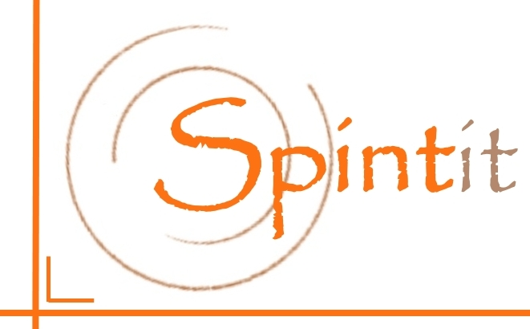

Tijdschrijven
Invoer
Dashboard
Beheer
Opgeslagen
+ Vandaag
+ Andere dag
Backup
Importeer
?
Periode
Deze week
Deze maand
Alles
Uren in periode
0:00
Km in periode
0
Dagen
0
Enter
volgende regel ·
Tab
volgend veld · starttijd wordt overgenomen van de vorige eindtijd · "Reistijd" vult km & bestemming automatisch.
Hoe werkt het?
Snel uren schrijven
+ Vandaag
maakt (of opent) de dag van vandaag en zet meteen een regel klaar.
De
starttijd
van een volgende regel op dezelfde dag is automatisch de
eindtijd
van de regel ervoor.
Duur
wordt automatisch berekend (eindtijd − starttijd − pauze).
Kies bij
Project
"Reistijd": vóór 10:00 →
20 km
+
MMC
, ná 14:00 →
20 km
+
Thuis
.
Met
Enter
spring je naar de volgende regel; op de laatste regel maak je er meteen een nieuwe bij.
Opslaan
De gegevens staan in
tijdschrijven.json
. De app leest dat bestand bij het openen en schrijft elke wijziging er automatisch naar terug (via
Start Tijdschrijven.cmd
).
Draait de server niet, dan wordt tijdelijk in de browser bewaard; gebruik dan
Backup
/
Importeer
.
Backup
downloadt een los JSON-bestand;
Importeer
laadt er een in.
Begrepen
Kies een dag
Annuleren
Openen